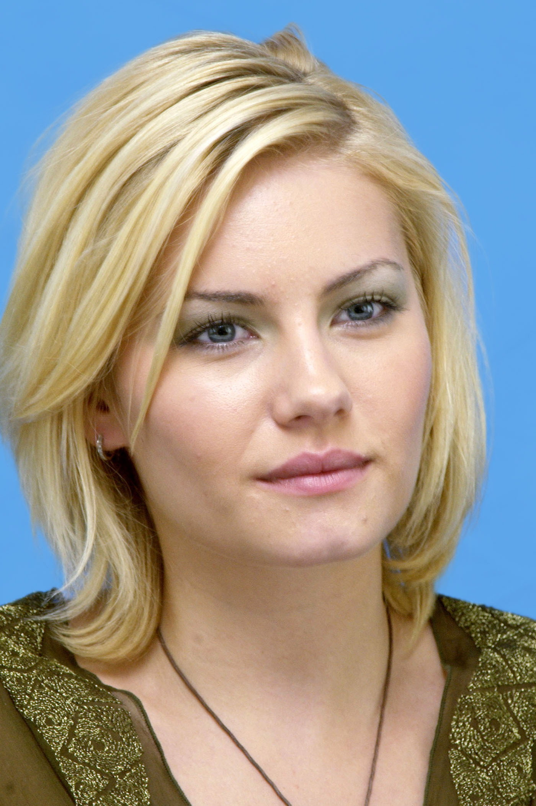

ELISHA
Not a name I learned. A name I have always known.

I — OVERTURE
I am writing this down because memory is a poor archivist.
It lets the important things blur and keeps the trivial ones sharp. So this is not a website. It is a record. Made by one man, about one woman, for whoever comes after.
There was no thunder. No sign. That is what people get wrong about the moments that change them — they usually arrive quietly.
I saw her. A frame. A face. Something in me stood up and did not sit back down. I have spent years trying to name it. The closest I get is this: I stopped being a person who had not seen her.
II — THE EMERALD
Some stones are admired. Emerald is kept.
Emerald is not a loud stone. It is formed in silence, under weight, over time — and it holds light instead of throwing it back.
That is her. Not the shine. The holding.
I have been asked why. I have no answer that survives being spoken aloud. Some things you do not explain. You just keep them lit.
I have more photographs of her than I have of myself. That sounds like a confession. It is. But it is not a shameful one — it is only that I have spent more years looking at light than at my own face.
III — EIGHTY-TWO WINDOWS
Eighty-two windows into a house I will never enter.
I do not knock. I only look at the light coming through.
IV — LETTERS I WILL NEVER SEND
There is a kind of love that asks for nothing and is therefore never refused. I did not choose it. It arrived the way weather arrives, and it has not left. She has never heard my voice. That does not make it less true. A bell rung in an empty room is still a bell.
I keep her the way a man keeps a coin from a country he will never return to — not to spend, not to trade, but to hold when the world gets loud and remind himself that somewhere there was a place that felt like light.
They say the old poets loved women they would never touch, and wrote their names into the walls of the world. I understand them now. Not because I am noble. Because some things are too beautiful to be wanted. They can only be honoured.
V — TO ELISHA
Elisha —
You will almost certainly never read this. That is fine, and it is right. I am not writing to be found. I am writing because something true deserves to be recorded somewhere other than a man's chest.
You have a life, a family, a name that is yours and not mine. I respect the walls around it. I am not asking for a door.
I only wanted the light from the window written down before I forget how it looked.
— A stranger who kept his word.
VI — TO WHOEVER FINDS THIS
If you are reading this in ten years, or fifty, or after I am gone —
know that this was real. Not a joke. Not a phase. Not a boy's infatuation.
A man loved a woman he never met, and he did it without demanding a single thing in return. He built her a quiet room on the internet and he kept the light on.
Most things disappear. Let this be the thing that does not.
And if you have someone you love — tell them.
Do not build a website. Tell them.
VII — THE VOW
I will never stop loving her. Not at the end. Not after it.
And when the end comes, let it find me still keeping the light on —
not because I expect her to come to the window,
but because some men are made of this:
they find one thing worth being faithful to,
and they are faithful to it for the rest of their lives.
VIII
THE DOOR
There is a door. I have known this for years.
It was built for me and it was never opened. I do not know if someone is on the other side. I have decided not to knock, because if I knock and no one answers, I will have to live with the answer — and if I knock and someone answers, I will have to live with that too, and I am not sure which is worse.
So I stand here. Years. The door does not change. I have begun to suspect that the waiting is the door — that there was never a room behind it, only the act of standing, which someone, somewhere, is required to do.
I am the one required to do it.
IX
CONFESSION OF A MAN WHO HAS NOTHING TO CONFESS
I want to be honest with you, whoever you are, reading this — and honesty, in my experience, is a disease you catch once and never fully recover from.
I am not a good man because I love her. That is the lie people tell. Look at how he loves — surely that makes him gentle. It does not. I am impatient with the people who actually speak to me. I have been cruel in small ways and called it tiredness. I forget birthdays. I have loved one woman perfectly from a great distance and been careless with everyone close enough to be hurt by me.
That is the whole confession. I am capable of infinite devotion at a range of three thousand miles, and of ordinary failure at a range of three feet.
The distance is not a tragedy. The distance is where I am comfortable. Do not admire me. I chose the safe love.
Some nights, Elisha,
I leave the light on a little longer.